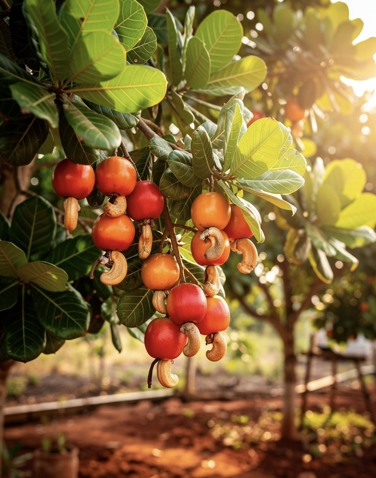

No middlemen. No storage. Straight from our cashew orchards in Ratnagiri, Maharashtra — handpicked, sun-dried, vacuum sealed and shipped to your door.
Scroll to explore

Our family has farmed cashew orchards in the Konkan hills of Ratnagiri for over 60 years. What began as a small plot of land by my grandfather has grown into 15 acres of thriving cashew groves — tended with patience, respect for the soil, and zero chemicals.
आमची शेती रत्नागिरीच्या लाल मातीत आहे. आम्ही कोणतेही रासायनिक खते वापरत नाही. प्रत्येक काजू हाताने तोडला जातो, उन्हात वाळवला जातो आणि थेट तुमच्यापर्यंत पाठवला जातो.
We sell directly — no brokers, no cold storage, no compromise. When you order, your cashews are packed within 48 hours of processing, by the same hands that harvested them.
Every step is done by our family. Nothing is outsourced. Nothing is rushed.
Cashew trees bloom with tiny pinkish-white flowers across our Ratnagiri orchard. Each flower holds the promise of one cashew — a process we watch over carefully every year.
The bright red-orange cashew apple (काजू बोंड) appears first. Sweet, tangy, rich in Vitamin C. Below it hangs the kidney-shaped nut. We pick each one carefully by hand.
Raw cashews spread on bamboo mats (चटई) under the Konkan sun for 2–3 days. This ancient method reduces moisture, concentrates flavour, and needs no machinery.
Cashews are steam-processed to remove the toxic outer shell, then gently roasted in traditional clay pots (मातीच्या भांड्यात) or kept raw — your choice. No chemicals involved.
Village women (आमच्या गावातल्या महिला) sort every single cashew by hand — by size, by wholeness, by grade. W180, W210, W240, W320. This is skill built over decades.
Graded cashews are vacuum-sealed in food-grade pouches, labelled by hand, and shipped to you within 48 hours of your order. Farm to your kitchen — direct and honest.
W-numbers indicate how many whole cashews fit in 1 pound (453g). Lower = larger kernel.
The largest, most impressive cashew. Buttery texture, rich flavour. Perfect for gifting, premium snacking, and garnishing sweets. Rare and seasonal.
Slightly smaller than W180 but equally premium. Ideal for mithai (काजू katli), halwa, and desserts. Holds shape perfectly when cooked.
The everyday cashew. Great for cooking curries (काजू करी), pulao, and snacking. Best value for regular household use and bulk buying.
Medium-sized kernels, perfect for grinding into cashew paste, butter, or using in sauces and gravies. Best bang for money.
The cashew tree (Anacardium occidentale) is remarkable — it produces both a fruit AND a nut. Our Ratnagiri trees, fed by the laterite soil and monsoon rains, live for 30+ years and produce some of India's finest cashews.
Order Fresh Cashew · ताजे काजू मागवाThe bright cashew apple is actually the false fruit. It contains 5× more Vitamin C than an orange. In Konkan villages, it is fermented into local vinegar (आमटी) or made into juice and jam.
Unlike all other nuts, the cashew grows outside its fruit — hanging below the cashew apple in a hard shell. The shell contains CNSL, a caustic oil, which is why cashews must be carefully processed before eating.
Ratnagiri's red laterite soil, combined with the sea breeze (समुद्री हवा) from the Arabian Sea, gives local cashews a distinctive creaminess and flavour that cannot be replicated elsewhere.
30g of cashew provides 37% of daily magnesium, 98% of copper, 31% of zinc, and healthy unsaturated fats. Rich in iron, B vitamins, and plant protein — a true superfood.
"The W180 cashews are extraordinary — so large and so creamy. I gifted them to relatives in Pune and they couldn't believe it was farm-direct. Will order every season."
"खूप छान काजू! रत्नागिरीचा असल्याने चव वेगळीच आहे. मध्यस्थ नसल्याने किंमत पण रास्त आहे. दरवर्षी आम्ही इथूनच घेतो."
"I've been buying cashews from shops for years. This is on a completely different level. Fresh, no stale smell, whole kernels. The vacuum packaging keeps them perfectly fresh."
माझ्या वडिलांनी हे झाड लावलं तेव्हा मी सहा वर्षांचा होतो. आता माझा मुलगा त्याच झाडावरून काजू तोडतो.
My father planted these trees when I was six years old. Today, my son harvests from those same trees. Three generations, one orchard, zero middlemen. When you order from us, you are not buying from a warehouse. You are receiving cashews packed by the same hands that picked them, the same morning they were processed.
That is our promise. That is Pasture.
Real cashews smell slightly sweet and buttery, like fresh milk. A stale or plastic smell means they have been in cold storage for months. Ours are packed within 48 hours.
Good cashews are ivory to pale gold — never bright white (bleached) or grey (old). Our W180 Jumbos have a natural warm ivory tone from sun-drying on bamboo mats.
A fresh cashew should snap cleanly, never bend. Bending means moisture has entered — poor storage or old stock. Ours are vacuum sealed at harvest to lock in crunch.
Quality cashews leave a clean, creamy aftertaste. Any bitterness means rancid oils from poor storage. Ratnagiri cashews are naturally sweet — the red laterite soil gives them their flavour.